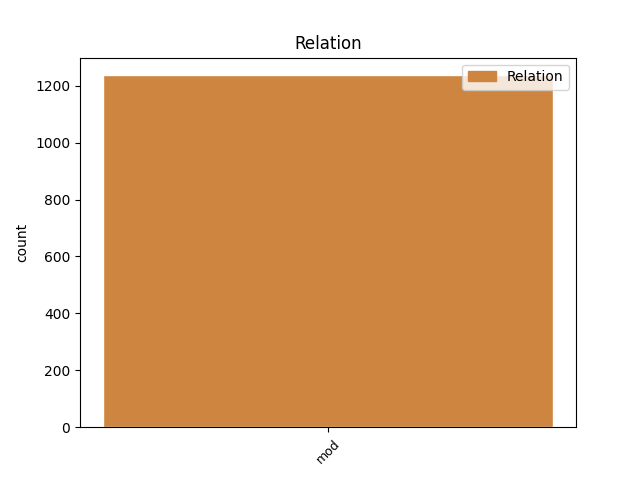
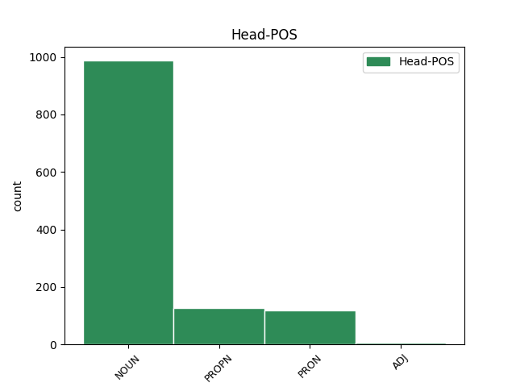
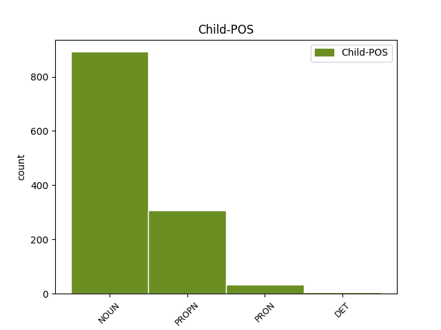

Distribution of features within this leaf



Agreement Rules sorted by frequency.
- When the dependent token is the modifer(mod) of the head token, and the dependent token is NOUN.
1 Kleine _ _ _ _ 0 _ _ _
2 und _ _ _ _ 0 _ _ _
3 mittelständische _ _ _ _ 0 _ _ _
4 Unternehmen _ _ _ _ 0 _ _ _
5 verstärkten _ _ _ _ 0 _ _ _
6 ihre _ _ _ _ 0 _ _ _
7 Bemühungen _ _ _ _ 0 _ _ _
8 , _ _ _ _ 0 _ _ _
9 mit _ _ _ _ 0 _ _ _
10 eigenen _ _ _ _ 0 _ _ _
11 Webseiten _ _ _ _ 0 _ _ _
12 im _ _ _ _ 0 _ _ _
13 Internet _ _ _ _ 0 _ _ _
14 präsent _ _ _ _ 0 _ _ _
15 zu _ _ _ _ 0 _ _ _
16 sein _ _ _ _ 0 _ _ _
17 , _ _ _ _ 0 _ _ _
18 um _ _ _ _ 0 _ _ _
19 so _ _ _ _ 0 _ _ _
20 vor _ _ _ _ 0 _ _ _
21 allen _ _ _ _ 0 _ _ _
22 eine _ _ _ _ 0 _ _ _
23 Verbesserung _ _ _ _ 0 _ _ _
24 des _ _ _ _ 0 _ _ _
25 Kundenservices _ _ _ _ 0 _ _ _
26 und _ _ _ _ 0 _ _ _
27 des _ _ _ _ 0 _ _ _
28 Images Image NOUN NN Case=Gen|Gender=Neut|Number=Sing|Person=3 0 _ _ _
29 ihres _ _ _ _ 0 _ _ _
30 Betriebes Betrieb NOUN NN Case=Gen|Gender=Masc|Number=Sing|Person=3 28 mod _ _
31 zu _ _ _ _ 0 _ _ _
32 erreichen _ _ _ _ 0 _ _ _
33 , _ _ _ _ 0 _ _ _
34 so _ _ _ _ 0 _ _ _
35 eines _ _ _ _ 0 _ _ _
36 der _ _ _ _ 0 _ _ _
37 Ergebnisse _ _ _ _ 0 _ _ _
38 einer _ _ _ _ 0 _ _ _
39 Studie _ _ _ _ 0 _ _ _
40 von _ _ _ _ 0 _ _ _
41 Dr. _ _ _ _ 0 _ _ _
42 Andreas _ _ _ _ 0 _ _ _
43 Kaapke _ _ _ _ 0 _ _ _
44 vom _ _ _ _ 0 _ _ _
45 Institut _ _ _ _ 0 _ _ _
46 für _ _ _ _ 0 _ _ _
47 Handelsforschung _ _ _ _ 0 _ _ _
48 der _ _ _ _ 0 _ _ _
49 Universität _ _ _ _ 0 _ _ _
50 Köln _ _ _ _ 0 _ _ _
51 . _ _ _ _ 0 _ _ _
1 Mit _ _ _ _ 0 _ _ _
2 einem _ _ _ _ 0 _ _ _
3 HP _ _ _ _ 0 _ _ _
4 Jornada _ _ _ _ 0 _ _ _
5 525 _ _ _ _ 0 _ _ _
6 Pocket _ _ _ _ 0 _ _ _
7 PC _ _ _ _ 0 _ _ _
8 samt _ _ _ _ 0 _ _ _
9 CompactFlash-Bluetooth-Steckkarte _ _ _ _ 0 _ _ _
10 von _ _ _ _ 0 _ _ _
11 Socket _ _ _ _ 0 _ _ _
12 ließ _ _ _ _ 0 _ _ _
13 sich _ _ _ _ 0 _ _ _
14 dagegen _ _ _ _ 0 _ _ _
15 problemlos _ _ _ _ 0 _ _ _
16 auf _ _ _ _ 0 _ _ _
17 einem ein PRON PIS Case=Dat|Gender=Masc|Number=Sing|Person=3|PronType=Ind,Neg,Tot 0 _ _ _
18 der _ _ _ _ 0 _ _ _
19 neuen _ _ _ _ 0 _ _ _
20 HP HP PROPN NE Case=Dat|Number=Sing|Person=3 17 mod _ _
21 Deskjet-Tintenstrahler _ _ _ _ 0 _ _ _
22 drucken _ _ _ _ 0 _ _ _
23 . _ _ _ _ 0 _ _ _
1 Der _ _ _ _ 0 _ _ _
2 Starautor _ _ _ _ 0 _ _ _
3 hatte _ _ _ _ 0 _ _ _
4 ja _ _ _ _ 0 _ _ _
5 auch _ _ _ _ 0 _ _ _
6 was was PRON PIS Case=Acc|Gender=Neut|Number=Sing|Person=3|PronType=Ind,Neg,Tot 0 _ _ _
7 ganz _ _ _ _ 0 _ _ _
8 anderes ander PRON PIS Case=Acc|Gender=Neut|Number=Sing|Person=3|PronType=Ind,Neg,Tot 6 mod _ _
9 im _ _ _ _ 0 _ _ _
10 Sinn _ _ _ _ 0 _ _ _
11 , _ _ _ _ 0 _ _ _
12 als _ _ _ _ 0 _ _ _
13 seinen _ _ _ _ 0 _ _ _
14 Lesern _ _ _ _ 0 _ _ _
15 neues _ _ _ _ 0 _ _ _
16 Futter _ _ _ _ 0 _ _ _
17 zu _ _ _ _ 0 _ _ _
18 geben _ _ _ _ 0 _ _ _
19 . _ _ _ _ 0 _ _ _
1 Dadurch _ _ _ _ 0 _ _ _
2 sei _ _ _ _ 0 _ _ _
3 der _ _ _ _ 0 _ _ _
4 Zugang _ _ _ _ 0 _ _ _
5 zu _ _ _ _ 0 _ _ _
6 einigen einig DET PIAT Case=Dat|Number=Plur|Person=3|PronType=Ind,Neg,Tot 7 mod _ _
7 Internet-Angeboten Angebot NOUN NN Case=Dat|Gender=Neut|Number=Plur|Person=3 0 _ _ _
8 , _ _ _ _ 0 _ _ _
9 darunter _ _ _ _ 0 _ _ _
10 microsoft.com _ _ _ _ 0 _ _ _
11 und _ _ _ _ 0 _ _ _
12 msn.com _ _ _ _ 0 _ _ _
13 , _ _ _ _ 0 _ _ _
14 teilweise _ _ _ _ 0 _ _ _
15 behindert _ _ _ _ 0 _ _ _
16 worden _ _ _ _ 0 _ _ _
17 . _ _ _ _ 0 _ _ _
Disagree Examples:
1 Die _ _ _ _ 0 _ _ _
2 9,3 _ _ _ _ 0 _ _ _
3 MByte _ _ _ _ 0 _ _ _
4 große _ _ _ _ 0 _ _ _
5 Software _ _ _ _ 0 _ _ _
6 , _ _ _ _ 0 _ _ _
7 die _ _ _ _ 0 _ _ _
8 laut _ _ _ _ 0 _ _ _
9 Microsoft _ _ _ _ 0 _ _ _
10 nur _ _ _ _ 0 _ _ _
11 unter _ _ _ _ 0 _ _ _
12 Windows _ _ _ _ 0 _ _ _
13 98 _ _ _ _ 0 _ _ _
14 und _ _ _ _ 0 _ _ _
15 2000 _ _ _ _ 0 _ _ _
16 läuft _ _ _ _ 0 _ _ _
17 und _ _ _ _ 0 _ _ _
18 auch _ _ _ _ 0 _ _ _
19 in _ _ _ _ 0 _ _ _
20 Windows _ _ _ _ 0 _ _ _
21 Millenium _ _ _ _ 0 _ _ _
22 enthalten _ _ _ _ 0 _ _ _
23 sein _ _ _ _ 0 _ _ _
24 wird _ _ _ _ 0 _ _ _
25 , _ _ _ _ 0 _ _ _
26 vereint _ _ _ _ 0 _ _ _
27 die _ _ _ _ 0 _ _ _
28 Funktionen _ _ _ _ 0 _ _ _
29 eines _ _ _ _ 0 _ _ _
30 Audio- _ _ _ _ 0 _ _ _
31 und _ _ _ _ 0 _ _ _
32 Video-Players _ _ _ _ 0 _ _ _
33 mit _ _ _ _ 0 _ _ _
34 denen denen PRON PDS Case=Dat|Number=Plur|Person=3|PronType=Dem 0 _ _ _
35 eines _ _ _ _ 0 _ _ _
36 Audio-CD-Brenners Brenner NOUN NN Case=Gen|Gender=Masc|Number=Sing|Person=3 34 mod _ _
37 . _ _ _ _ 0 _ _ _
1 Bislang _ _ _ _ 0 _ _ _
2 bot _ _ _ _ 0 _ _ _
3 Versatel _ _ _ _ 0 _ _ _
4 in _ _ _ _ 0 _ _ _
5 Teilen Teil NOUN NN Case=Dat|Number=Plur|Person=3 0 _ _ _
6 Nordrhein-Westfalens Nordrhein-Westfalens PROPN NE Case=Gen|Number=Sing|Person=3 5 mod _ _
7 ADSL-Zugänge _ _ _ _ 0 _ _ _
8 an _ _ _ _ 0 _ _ _
9 , _ _ _ _ 0 _ _ _
10 bei _ _ _ _ 0 _ _ _
11 denen _ _ _ _ 0 _ _ _
12 nach _ _ _ _ 0 _ _ _
13 dem _ _ _ _ 0 _ _ _
14 jeweils _ _ _ _ 0 _ _ _
15 anfallenden _ _ _ _ 0 _ _ _
16 Transfervolumen _ _ _ _ 0 _ _ _
17 abgerechnet _ _ _ _ 0 _ _ _
18 wurde _ _ _ _ 0 _ _ _
19 . _ _ _ _ 0 _ _ _
1 Die _ _ _ _ 0 _ _ _
2 technischen _ _ _ _ 0 _ _ _
3 Daten _ _ _ _ 0 _ _ _
4 des _ _ _ _ 0 _ _ _
5 AOL-DSL-Tarifs _ _ _ _ 0 _ _ _
6 sind _ _ _ _ 0 _ _ _
7 die _ _ _ _ 0 _ _ _
8 gleichen _ _ _ _ 0 _ _ _
9 wie _ _ _ _ 0 _ _ _
10 die die PRON PDS Case=Nom|Gender=Fem|Number=Sing|Person=3|PronType=Dem 0 _ _ _
11 des _ _ _ _ 0 _ _ _
12 T-DSL-Flat-Tarifs Tarif NOUN NN Case=Gen|Gender=Masc|Number=Sing|Person=3 10 mod _ _
13 von _ _ _ _ 0 _ _ _
14 T-Online _ _ _ _ 0 _ _ _
15 . _ _ _ _ 0 _ _ _
1 Met@box _ _ _ _ 0 _ _ _
2 war _ _ _ _ 0 _ _ _
3 vor _ _ _ _ 0 _ _ _
4 einiger _ _ _ _ 0 _ _ _
5 Zeit _ _ _ _ 0 _ _ _
6 in _ _ _ _ 0 _ _ _
7 die _ _ _ _ 0 _ _ _
8 Kritik _ _ _ _ 0 _ _ _
9 geraten _ _ _ _ 0 _ _ _
10 , _ _ _ _ 0 _ _ _
11 da _ _ _ _ 0 _ _ _
12 auf _ _ _ _ 0 _ _ _
13 Grund _ _ _ _ 0 _ _ _
14 der _ _ _ _ 0 _ _ _
15 Informationspolitik _ _ _ _ 0 _ _ _
16 Zweifel _ _ _ _ 0 _ _ _
17 an _ _ _ _ 0 _ _ _
18 einigen _ _ _ _ 0 _ _ _
19 Großaufträgen Großauftrag NOUN NN Case=Dat|Gender=Masc|Number=Plur|Person=3 0 _ _ _
20 des _ _ _ _ 0 _ _ _
21 Unternehmens Unternehmen NOUN NN Case=Gen|Gender=Neut|Number=Sing|Person=3 19 mod _ _
22 auftauchten _ _ _ _ 0 _ _ _
23 . _ _ _ _ 0 _ _ _
1 Desweiteren _ _ _ _ 0 _ _ _
2 verlangt _ _ _ _ 0 _ _ _
3 IBM _ _ _ _ 0 _ _ _
4 eine _ _ _ _ 0 _ _ _
5 genauere _ _ _ _ 0 _ _ _
6 Definition _ _ _ _ 0 _ _ _
7 des _ _ _ _ 0 _ _ _
8 Begriffs _ _ _ _ 0 _ _ _
9 " _ _ _ _ 0 _ _ _
10 Komplett-PC _ _ _ _ 0 _ _ _
11 " _ _ _ _ 0 _ _ _
12 , _ _ _ _ 0 _ _ _
13 da _ _ _ _ 0 _ _ _
14 aus _ _ _ _ 0 _ _ _
15 diesem _ _ _ _ 0 _ _ _
16 nicht _ _ _ _ 0 _ _ _
17 hervorgeht _ _ _ _ 0 _ _ _
18 , _ _ _ _ 0 _ _ _
19 ob _ _ _ _ 0 _ _ _
20 hiermit _ _ _ _ 0 _ _ _
21 beispielsweise _ _ _ _ 0 _ _ _
22 auch _ _ _ _ 0 _ _ _
23 Thin _ _ _ _ 0 _ _ _
24 Clients _ _ _ _ 0 _ _ _
25 gemeint _ _ _ _ 0 _ _ _
26 seien _ _ _ _ 0 _ _ _
27 , _ _ _ _ 0 _ _ _
28 oder _ _ _ _ 0 _ _ _
29 ob _ _ _ _ 0 _ _ _
30 sich _ _ _ _ 0 _ _ _
31 dieser _ _ _ _ 0 _ _ _
32 Begriff _ _ _ _ 0 _ _ _
33 nur _ _ _ _ 0 _ _ _
34 an _ _ _ _ 0 _ _ _
35 bestimmten _ _ _ _ 0 _ _ _
36 Teilen Teil NOUN NN Case=Dat|Number=Plur|Person=3 0 _ _ _
37 eines _ _ _ _ 0 _ _ _
38 PCs PC NOUN NN Case=Gen|Gender=Masc|Number=Sing|Person=3 36 mod _ _
39 wie _ _ _ _ 0 _ _ _
40 zum _ _ _ _ 0 _ _ _
41 Beispiel _ _ _ _ 0 _ _ _
42 der _ _ _ _ 0 _ _ _
43 Festplatte _ _ _ _ 0 _ _ _
44 festmache _ _ _ _ 0 _ _ _
45 . _ _ _ _ 0 _ _ _